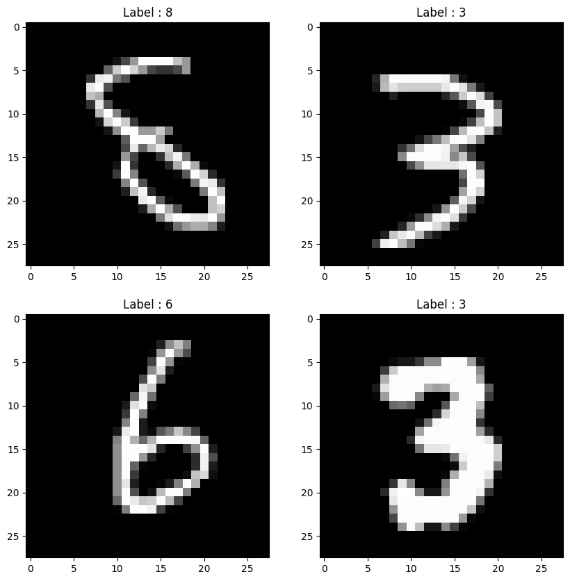
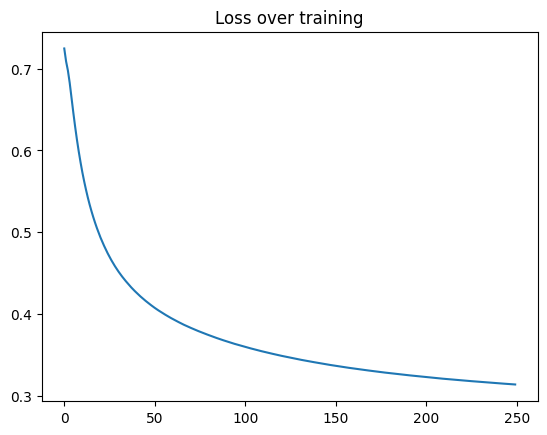

Using the Forward-Forward Algorithm for Image Classification
Author: Suvaditya Mukherjee
Date created: 2023/01/08
Last modified: 2024/09/17
Description: Training a Dense-layer model using the Forward-Forward algorithm.

Introduction
The following example explores how to use the Forward-Forward algorithm to perform training instead of the traditionally-used method of backpropagation, as proposed by Hinton in The Forward-Forward Algorithm: Some Preliminary Investigations (2022).
The concept was inspired by the understanding behind Boltzmann Machines. Backpropagation involves calculating the difference between actual and predicted output via a cost function to adjust network weights. On the other hand, the FF Algorithm suggests the analogy of neurons which get "excited" based on looking at a certain recognized combination of an image and its correct corresponding label.
This method takes certain inspiration from the biological learning process that occurs in the cortex. A significant advantage that this method brings is the fact that backpropagation through the network does not need to be performed anymore, and that weight updates are local to the layer itself.
As this is yet still an experimental method, it does not yield state-of-the-art results. But with proper tuning, it is supposed to come close to the same. Through this example, we will examine a process that allows us to implement the Forward-Forward algorithm within the layers themselves, instead of the traditional method of relying on the global loss functions and optimizers.
The tutorial is structured as follows:
- Perform necessary imports
- Load the MNIST dataset
- Visualize Random samples from the MNIST dataset
- Define a
FFDenseLayer to overridecalland implement a customforwardforwardmethod which performs weight updates. - Define a
FFNetworkLayer to overridetrain_step,predictand implement 2 custom functions for per-sample prediction and overlaying labels - Convert MNIST from
NumPyarrays totf.data.Dataset - Fit the network
- Visualize results
- Perform inference on test samples
As this example requires the customization of certain core functions with
keras.layers.Layer and keras.models.Model, refer to the following resources for
a primer on how to do so:
Setup imports
import os
os.environ["KERAS_BACKEND"] = "tensorflow"
import tensorflow as tf
import keras
from keras import ops
import numpy as np
import matplotlib.pyplot as plt
from sklearn.metrics import accuracy_score
import random
from tensorflow.compiler.tf2xla.python import xla
Load the dataset and visualize the data
We use the keras.datasets.mnist.load_data() utility to directly pull the MNIST dataset
in the form of NumPy arrays. We then arrange it in the form of the train and test
splits.
Following loading the dataset, we select 4 random samples from within the training set
and visualize them using matplotlib.pyplot.
(x_train, y_train), (x_test, y_test) = keras.datasets.mnist.load_data()
print("4 Random Training samples and labels")
idx1, idx2, idx3, idx4 = random.sample(range(0, x_train.shape[0]), 4)
img1 = (x_train[idx1], y_train[idx1])
img2 = (x_train[idx2], y_train[idx2])
img3 = (x_train[idx3], y_train[idx3])
img4 = (x_train[idx4], y_train[idx4])
imgs = [img1, img2, img3, img4]
plt.figure(figsize=(10, 10))
for idx, item in enumerate(imgs):
image, label = item[0], item[1]
plt.subplot(2, 2, idx + 1)
plt.imshow(image, cmap="gray")
plt.title(f"Label : {label}")
plt.show()
4 Random Training samples and labels

Define FFDense custom layer
In this custom layer, we have a base keras.layers.Dense object which acts as the
base Dense layer within. Since weight updates will happen within the layer itself, we
add an keras.optimizers.Optimizer object that is accepted from the user. Here, we
use Adam as our optimizer with a rather higher learning rate of 0.03.
Following the algorithm's specifics, we must set a threshold parameter that will be
used to make the positive-negative decision in each prediction. This is set to a default
of 2.0.
As the epochs are localized to the layer itself, we also set a num_epochs parameter
(defaults to 50).
We override the call method in order to perform a normalization over the complete
input space followed by running it through the base Dense layer as would happen in a
normal Dense layer call.
We implement the Forward-Forward algorithm which accepts 2 kinds of input tensors, each
representing the positive and negative samples respectively. We write a custom training
loop here with the use of tf.GradientTape(), within which we calculate a loss per
sample by taking the distance of the prediction from the threshold to understand the
error and taking its mean to get a mean_loss metric.
With the help of tf.GradientTape() we calculate the gradient updates for the trainable
base Dense layer and apply them using the layer's local optimizer.
Finally, we return the call result as the Dense results of the positive and negative
samples while also returning the last mean_loss metric and all the loss values over a
certain all-epoch run.
class FFDense(keras.layers.Layer):
"""
A custom ForwardForward-enabled Dense layer. It has an implementation of the
Forward-Forward network internally for use.
This layer must be used in conjunction with the `FFNetwork` model.
"""
def __init__(
self,
units,
init_optimizer,
loss_metric,
num_epochs=50,
use_bias=True,
kernel_initializer="glorot_uniform",
bias_initializer="zeros",
kernel_regularizer=None,
bias_regularizer=None,
**kwargs,
):
super().__init__(**kwargs)
self.dense = keras.layers.Dense(
units=units,
use_bias=use_bias,
kernel_initializer=kernel_initializer,
bias_initializer=bias_initializer,
kernel_regularizer=kernel_regularizer,
bias_regularizer=bias_regularizer,
)
self.relu = keras.layers.ReLU()
self.optimizer = init_optimizer()
self.loss_metric = loss_metric
self.threshold = 1.5
self.num_epochs = num_epochs
# We perform a normalization step before we run the input through the Dense
# layer.
def call(self, x):
x_norm = ops.norm(x, ord=2, axis=1, keepdims=True)
x_norm = x_norm + 1e-4
x_dir = x / x_norm
res = self.dense(x_dir)
return self.relu(res)
# The Forward-Forward algorithm is below. We first perform the Dense-layer
# operation and then get a Mean Square value for all positive and negative
# samples respectively.
# The custom loss function finds the distance between the Mean-squared
# result and the threshold value we set (a hyperparameter) that will define
# whether the prediction is positive or negative in nature. Once the loss is
# calculated, we get a mean across the entire batch combined and perform a
# gradient calculation and optimization step. This does not technically
# qualify as backpropagation since there is no gradient being
# sent to any previous layer and is completely local in nature.
def forward_forward(self, x_pos, x_neg):
for i in range(self.num_epochs):
with tf.GradientTape() as tape:
g_pos = ops.mean(ops.power(self.call(x_pos), 2), 1)
g_neg = ops.mean(ops.power(self.call(x_neg), 2), 1)
loss = ops.log(
1
+ ops.exp(
ops.concatenate(
[-g_pos + self.threshold, g_neg - self.threshold], 0
)
)
)
mean_loss = ops.cast(ops.mean(loss), dtype="float32")
self.loss_metric.update_state([mean_loss])
gradients = tape.gradient(mean_loss, self.dense.trainable_weights)
self.optimizer.apply_gradients(zip(gradients, self.dense.trainable_weights))
return (
ops.stop_gradient(self.call(x_pos)),
ops.stop_gradient(self.call(x_neg)),
self.loss_metric.result(),
)
Define the FFNetwork Custom Model
With our custom layer defined, we also need to override the train_step method and
define a custom keras.models.Model that works with our FFDense layer.
For this algorithm, we must 'embed' the labels onto the original image. To do so, we
exploit the structure of MNIST images where the top-left 10 pixels are always zeros. We
use that as a label space in order to visually one-hot-encode the labels within the image
itself. This action is performed by the overlay_y_on_x function.
We break down the prediction function with a per-sample prediction function which is then
called over the entire test set by the overriden predict() function. The prediction is
performed here with the help of measuring the excitation of the neurons per layer for
each image. This is then summed over all layers to calculate a network-wide 'goodness
score'. The label with the highest 'goodness score' is then chosen as the sample
prediction.
The train_step function is overriden to act as the main controlling loop for running
training on each layer as per the number of epochs per layer.
class FFNetwork(keras.Model):
"""
A [`keras.Model`](/api/models/model#model-class) that supports a `FFDense` network creation. This model
can work for any kind of classification task. It has an internal
implementation with some details specific to the MNIST dataset which can be
changed as per the use-case.
"""
# Since each layer runs gradient-calculation and optimization locally, each
# layer has its own optimizer that we pass. As a standard choice, we pass
# the `Adam` optimizer with a default learning rate of 0.03 as that was
# found to be the best rate after experimentation.
# Loss is tracked using `loss_var` and `loss_count` variables.
def __init__(
self,
dims,
init_layer_optimizer=lambda: keras.optimizers.Adam(learning_rate=0.03),
**kwargs,
):
super().__init__(**kwargs)
self.init_layer_optimizer = init_layer_optimizer
self.loss_var = keras.Variable(0.0, trainable=False, dtype="float32")
self.loss_count = keras.Variable(0.0, trainable=False, dtype="float32")
self.layer_list = [keras.Input(shape=(dims[0],))]
self.metrics_built = False
for d in range(len(dims) - 1):
self.layer_list += [
FFDense(
dims[d + 1],
init_optimizer=self.init_layer_optimizer,
loss_metric=keras.metrics.Mean(),
)
]
# This function makes a dynamic change to the image wherein the labels are
# put on top of the original image (for this example, as MNIST has 10
# unique labels, we take the top-left corner's first 10 pixels). This
# function returns the original data tensor with the first 10 pixels being
# a pixel-based one-hot representation of the labels.
@tf.function(reduce_retracing=True)
def overlay_y_on_x(self, data):
X_sample, y_sample = data
max_sample = ops.amax(X_sample, axis=0, keepdims=True)
max_sample = ops.cast(max_sample, dtype="float64")
X_zeros = ops.zeros([10], dtype="float64")
X_update = xla.dynamic_update_slice(X_zeros, max_sample, [y_sample])
X_sample = xla.dynamic_update_slice(X_sample, X_update, [0])
return X_sample, y_sample
# A custom `predict_one_sample` performs predictions by passing the images
# through the network, measures the results produced by each layer (i.e.
# how high/low the output values are with respect to the set threshold for
# each label) and then simply finding the label with the highest values.
# In such a case, the images are tested for their 'goodness' with all
# labels.
@tf.function(reduce_retracing=True)
def predict_one_sample(self, x):
goodness_per_label = []
x = ops.reshape(x, [ops.shape(x)[0] * ops.shape(x)[1]])
for label in range(10):
h, label = self.overlay_y_on_x(data=(x, label))
h = ops.reshape(h, [-1, ops.shape(h)[0]])
goodness = []
for layer_idx in range(1, len(self.layer_list)):
layer = self.layer_list[layer_idx]
h = layer(h)
goodness += [ops.mean(ops.power(h, 2), 1)]
goodness_per_label += [ops.expand_dims(ops.sum(goodness, keepdims=True), 1)]
goodness_per_label = tf.concat(goodness_per_label, 1)
return ops.cast(ops.argmax(goodness_per_label, 1), dtype="float64")
def predict(self, data):
x = data
preds = list()
preds = ops.vectorized_map(self.predict_one_sample, x)
return np.asarray(preds, dtype=int)
# This custom `train_step` function overrides the internal `train_step`
# implementation. We take all the input image tensors, flatten them and
# subsequently produce positive and negative samples on the images.
# A positive sample is an image that has the right label encoded on it with
# the `overlay_y_on_x` function. A negative sample is an image that has an
# erroneous label present on it.
# With the samples ready, we pass them through each `FFLayer` and perform
# the Forward-Forward computation on it. The returned loss is the final
# loss value over all the layers.
@tf.function(jit_compile=False)
def train_step(self, data):
x, y = data
if not self.metrics_built:
# build metrics to ensure they can be queried without erroring out.
# We can't update the metrics' state, as we would usually do, since
# we do not perform predictions within the train step
for metric in self.metrics:
if hasattr(metric, "build"):
metric.build(y, y)
self.metrics_built = True
# Flatten op
x = ops.reshape(x, [-1, ops.shape(x)[1] * ops.shape(x)[2]])
x_pos, y = ops.vectorized_map(self.overlay_y_on_x, (x, y))
random_y = tf.random.shuffle(y)
x_neg, y = tf.map_fn(self.overlay_y_on_x, (x, random_y))
h_pos, h_neg = x_pos, x_neg
for idx, layer in enumerate(self.layers):
if isinstance(layer, FFDense):
print(f"Training layer {idx+1} now : ")
h_pos, h_neg, loss = layer.forward_forward(h_pos, h_neg)
self.loss_var.assign_add(loss)
self.loss_count.assign_add(1.0)
else:
print(f"Passing layer {idx+1} now : ")
x = layer(x)
mean_res = ops.divide(self.loss_var, self.loss_count)
return {"FinalLoss": mean_res}
Convert MNIST NumPy arrays to tf.data.Dataset
We now perform some preliminary processing on the NumPy arrays and then convert them
into the tf.data.Dataset format which allows for optimized loading.
x_train = x_train.astype(float) / 255
x_test = x_test.astype(float) / 255
y_train = y_train.astype(int)
y_test = y_test.astype(int)
train_dataset = tf.data.Dataset.from_tensor_slices((x_train, y_train))
test_dataset = tf.data.Dataset.from_tensor_slices((x_test, y_test))
train_dataset = train_dataset.batch(60000)
test_dataset = test_dataset.batch(10000)
Fit the network and visualize results
Having performed all previous set-up, we are now going to run model.fit() and run 250
model epochs, which will perform 50*250 epochs on each layer. We get to see the plotted loss
curve as each layer is trained.
model = FFNetwork(dims=[784, 500, 500])
model.compile(
optimizer=keras.optimizers.Adam(learning_rate=0.03),
loss="mse",
jit_compile=False,
metrics=[],
)
epochs = 250
history = model.fit(train_dataset, epochs=epochs)
Epoch 1/250
Training layer 1 now :
Training layer 2 now :
Training layer 1 now :
Training layer 2 now :
1/1 ━━━━━━━━━━━━━━━━━━━━ 90s 90s/step - FinalLoss: 0.7247
Epoch 2/250
1/1 ━━━━━━━━━━━━━━━━━━━━ 41s 41s/step - FinalLoss: 0.7089
Epoch 3/250
1/1 ━━━━━━━━━━━━━━━━━━━━ 41s 41s/step - FinalLoss: 0.6978
Epoch 4/250
1/1 ━━━━━━━━━━━━━━━━━━━━ 40s 40s/step - FinalLoss: 0.6827
Epoch 5/250
1/1 ━━━━━━━━━━━━━━━━━━━━ 40s 40s/step - FinalLoss: 0.6644
Epoch 6/250
1/1 ━━━━━━━━━━━━━━━━━━━━ 40s 40s/step - FinalLoss: 0.6462
Epoch 7/250
1/1 ━━━━━━━━━━━━━━━━━━━━ 40s 40s/step - FinalLoss: 0.6290
Epoch 8/250
1/1 ━━━━━━━━━━━━━━━━━━━━ 40s 40s/step - FinalLoss: 0.6131
Epoch 9/250
1/1 ━━━━━━━━━━━━━━━━━━━━ 40s 40s/step - FinalLoss: 0.5986
Epoch 10/250
1/1 ━━━━━━━━━━━━━━━━━━━━ 40s 40s/step - FinalLoss: 0.5853
Epoch 11/250
1/1 ━━━━━━━━━━━━━━━━━━━━ 40s 40s/step - FinalLoss: 0.5731
Epoch 12/250
1/1 ━━━━━━━━━━━━━━━━━━━━ 40s 40s/step - FinalLoss: 0.5621
Epoch 13/250
1/1 ━━━━━━━━━━━━━━━━━━━━ 40s 40s/step - FinalLoss: 0.5519
Epoch 14/250
1/1 ━━━━━━━━━━━━━━━━━━━━ 40s 40s/step - FinalLoss: 0.5425
Epoch 15/250
1/1 ━━━━━━━━━━━━━━━━━━━━ 40s 40s/step - FinalLoss: 0.5338
Epoch 16/250
1/1 ━━━━━━━━━━━━━━━━━━━━ 40s 40s/step - FinalLoss: 0.5259
Epoch 17/250
1/1 ━━━━━━━━━━━━━━━━━━━━ 40s 40s/step - FinalLoss: 0.5186
Epoch 18/250
1/1 ━━━━━━━━━━━━━━━━━━━━ 40s 40s/step - FinalLoss: 0.5117
Epoch 19/250
1/1 ━━━━━━━━━━━━━━━━━━━━ 40s 40s/step - FinalLoss: 0.5052
Epoch 20/250
1/1 ━━━━━━━━━━━━━━━━━━━━ 40s 40s/step - FinalLoss: 0.4992
Epoch 21/250
1/1 ━━━━━━━━━━━━━━━━━━━━ 40s 40s/step - FinalLoss: 0.4935
Epoch 22/250
1/1 ━━━━━━━━━━━━━━━━━━━━ 40s 40s/step - FinalLoss: 0.4883
Epoch 23/250
1/1 ━━━━━━━━━━━━━━━━━━━━ 40s 40s/step - FinalLoss: 0.4833
Epoch 24/250
1/1 ━━━━━━━━━━━━━━━━━━━━ 40s 40s/step - FinalLoss: 0.4786
Epoch 25/250
1/1 ━━━━━━━━━━━━━━━━━━━━ 40s 40s/step - FinalLoss: 0.4741
Epoch 26/250
1/1 ━━━━━━━━━━━━━━━━━━━━ 41s 41s/step - FinalLoss: 0.4698
Epoch 27/250
1/1 ━━━━━━━━━━━━━━━━━━━━ 41s 41s/step - FinalLoss: 0.4658
Epoch 28/250
1/1 ━━━━━━━━━━━━━━━━━━━━ 41s 41s/step - FinalLoss: 0.4620
Epoch 29/250
1/1 ━━━━━━━━━━━━━━━━━━━━ 40s 40s/step - FinalLoss: 0.4584
Epoch 30/250
1/1 ━━━━━━━━━━━━━━━━━━━━ 41s 41s/step - FinalLoss: 0.4550
Epoch 31/250
1/1 ━━━━━━━━━━━━━━━━━━━━ 41s 41s/step - FinalLoss: 0.4517
Epoch 32/250
1/1 ━━━━━━━━━━━━━━━━━━━━ 41s 41s/step - FinalLoss: 0.4486
Epoch 33/250
1/1 ━━━━━━━━━━━━━━━━━━━━ 41s 41s/step - FinalLoss: 0.4456
Epoch 34/250
1/1 ━━━━━━━━━━━━━━━━━━━━ 41s 41s/step - FinalLoss: 0.4429
Epoch 35/250
1/1 ━━━━━━━━━━━━━━━━━━━━ 41s 41s/step - FinalLoss: 0.4401
Epoch 36/250
1/1 ━━━━━━━━━━━━━━━━━━━━ 41s 41s/step - FinalLoss: 0.4375
Epoch 37/250
1/1 ━━━━━━━━━━━━━━━━━━━━ 41s 41s/step - FinalLoss: 0.4350
Epoch 38/250
1/1 ━━━━━━━━━━━━━━━━━━━━ 41s 41s/step - FinalLoss: 0.4325
Epoch 39/250
1/1 ━━━━━━━━━━━━━━━━━━━━ 41s 41s/step - FinalLoss: 0.4302
Epoch 40/250
1/1 ━━━━━━━━━━━━━━━━━━━━ 41s 41s/step - FinalLoss: 0.4279
Epoch 41/250
1/1 ━━━━━━━━━━━━━━━━━━━━ 41s 41s/step - FinalLoss: 0.4258
Epoch 42/250
1/1 ━━━━━━━━━━━━━━━━━━━━ 41s 41s/step - FinalLoss: 0.4236
Epoch 43/250
1/1 ━━━━━━━━━━━━━━━━━━━━ 41s 41s/step - FinalLoss: 0.4216
Epoch 44/250
1/1 ━━━━━━━━━━━━━━━━━━━━ 41s 41s/step - FinalLoss: 0.4197
Epoch 45/250
1/1 ━━━━━━━━━━━━━━━━━━━━ 41s 41s/step - FinalLoss: 0.4177
Epoch 46/250
1/1 ━━━━━━━━━━━━━━━━━━━━ 41s 41s/step - FinalLoss: 0.4159
Epoch 47/250
1/1 ━━━━━━━━━━━━━━━━━━━━ 41s 41s/step - FinalLoss: 0.4141
Epoch 48/250
1/1 ━━━━━━━━━━━━━━━━━━━━ 40s 40s/step - FinalLoss: 0.4124
Epoch 49/250
1/1 ━━━━━━━━━━━━━━━━━━━━ 40s 40s/step - FinalLoss: 0.4107
Epoch 50/250
1/1 ━━━━━━━━━━━━━━━━━━━━ 40s 40s/step - FinalLoss: 0.4090
Epoch 51/250
1/1 ━━━━━━━━━━━━━━━━━━━━ 40s 40s/step - FinalLoss: 0.4074
Epoch 52/250
1/1 ━━━━━━━━━━━━━━━━━━━━ 40s 40s/step - FinalLoss: 0.4059
Epoch 53/250
1/1 ━━━━━━━━━━━━━━━━━━━━ 40s 40s/step - FinalLoss: 0.4044
Epoch 54/250
1/1 ━━━━━━━━━━━━━━━━━━━━ 40s 40s/step - FinalLoss: 0.4030
Epoch 55/250
1/1 ━━━━━━━━━━━━━━━━━━━━ 41s 41s/step - FinalLoss: 0.4016
Epoch 56/250
1/1 ━━━━━━━━━━━━━━━━━━━━ 41s 41s/step - FinalLoss: 0.4002
Epoch 57/250
1/1 ━━━━━━━━━━━━━━━━━━━━ 41s 41s/step - FinalLoss: 0.3988
Epoch 58/250
1/1 ━━━━━━━━━━━━━━━━━━━━ 41s 41s/step - FinalLoss: 0.3975
Epoch 59/250
1/1 ━━━━━━━━━━━━━━━━━━━━ 40s 40s/step - FinalLoss: 0.3962
Epoch 60/250
1/1 ━━━━━━━━━━━━━━━━━━━━ 40s 40s/step - FinalLoss: 0.3950
Epoch 61/250
1/1 ━━━━━━━━━━━━━━━━━━━━ 40s 40s/step - FinalLoss: 0.3938
Epoch 62/250
1/1 ━━━━━━━━━━━━━━━━━━━━ 40s 40s/step - FinalLoss: 0.3926
Epoch 63/250
1/1 ━━━━━━━━━━━━━━━━━━━━ 40s 40s/step - FinalLoss: 0.3914
Epoch 64/250
1/1 ━━━━━━━━━━━━━━━━━━━━ 40s 40s/step - FinalLoss: 0.3903
Epoch 65/250
1/1 ━━━━━━━━━━━━━━━━━━━━ 40s 40s/step - FinalLoss: 0.3891
Epoch 66/250
1/1 ━━━━━━━━━━━━━━━━━━━━ 40s 40s/step - FinalLoss: 0.3880
Epoch 67/250
1/1 ━━━━━━━━━━━━━━━━━━━━ 40s 40s/step - FinalLoss: 0.3869
Epoch 68/250
1/1 ━━━━━━━━━━━━━━━━━━━━ 40s 40s/step - FinalLoss: 0.3859
Epoch 69/250
1/1 ━━━━━━━━━━━━━━━━━━━━ 40s 40s/step - FinalLoss: 0.3849
Epoch 70/250
1/1 ━━━━━━━━━━━━━━━━━━━━ 41s 41s/step - FinalLoss: 0.3839
Epoch 71/250
1/1 ━━━━━━━━━━━━━━━━━━━━ 41s 41s/step - FinalLoss: 0.3829
Epoch 72/250
1/1 ━━━━━━━━━━━━━━━━━━━━ 41s 41s/step - FinalLoss: 0.3819
Epoch 73/250
1/1 ━━━━━━━━━━━━━━━━━━━━ 41s 41s/step - FinalLoss: 0.3810
Epoch 74/250
1/1 ━━━━━━━━━━━━━━━━━━━━ 41s 41s/step - FinalLoss: 0.3801
Epoch 75/250
1/1 ━━━━━━━━━━━━━━━━━━━━ 41s 41s/step - FinalLoss: 0.3792
Epoch 76/250
1/1 ━━━━━━━━━━━━━━━━━━━━ 41s 41s/step - FinalLoss: 0.3783
Epoch 77/250
1/1 ━━━━━━━━━━━━━━━━━━━━ 41s 41s/step - FinalLoss: 0.3774
Epoch 78/250
1/1 ━━━━━━━━━━━━━━━━━━━━ 41s 41s/step - FinalLoss: 0.3765
Epoch 79/250
1/1 ━━━━━━━━━━━━━━━━━━━━ 41s 41s/step - FinalLoss: 0.3757
Epoch 80/250
1/1 ━━━━━━━━━━━━━━━━━━━━ 41s 41s/step - FinalLoss: 0.3748
Epoch 81/250
1/1 ━━━━━━━━━━━━━━━━━━━━ 41s 41s/step - FinalLoss: 0.3740
Epoch 82/250
1/1 ━━━━━━━━━━━━━━━━━━━━ 41s 41s/step - FinalLoss: 0.3732
Epoch 83/250
1/1 ━━━━━━━━━━━━━━━━━━━━ 41s 41s/step - FinalLoss: 0.3723
Epoch 84/250
1/1 ━━━━━━━━━━━━━━━━━━━━ 41s 41s/step - FinalLoss: 0.3715
Epoch 85/250
1/1 ━━━━━━━━━━━━━━━━━━━━ 41s 41s/step - FinalLoss: 0.3708
Epoch 86/250
1/1 ━━━━━━━━━━━━━━━━━━━━ 41s 41s/step - FinalLoss: 0.3700
Epoch 87/250
1/1 ━━━━━━━━━━━━━━━━━━━━ 41s 41s/step - FinalLoss: 0.3692
Epoch 88/250
1/1 ━━━━━━━━━━━━━━━━━━━━ 41s 41s/step - FinalLoss: 0.3685
Epoch 89/250
1/1 ━━━━━━━━━━━━━━━━━━━━ 41s 41s/step - FinalLoss: 0.3677
Epoch 90/250
1/1 ━━━━━━━━━━━━━━━━━━━━ 41s 41s/step - FinalLoss: 0.3670
Epoch 91/250
1/1 ━━━━━━━━━━━━━━━━━━━━ 41s 41s/step - FinalLoss: 0.3663
Epoch 92/250
1/1 ━━━━━━━━━━━━━━━━━━━━ 41s 41s/step - FinalLoss: 0.3656
Epoch 93/250
1/1 ━━━━━━━━━━━━━━━━━━━━ 40s 40s/step - FinalLoss: 0.3649
Epoch 94/250
1/1 ━━━━━━━━━━━━━━━━━━━━ 40s 40s/step - FinalLoss: 0.3642
Epoch 95/250
1/1 ━━━━━━━━━━━━━━━━━━━━ 41s 41s/step - FinalLoss: 0.3635
Epoch 96/250
1/1 ━━━━━━━━━━━━━━━━━━━━ 41s 41s/step - FinalLoss: 0.3629
Epoch 97/250
1/1 ━━━━━━━━━━━━━━━━━━━━ 40s 40s/step - FinalLoss: 0.3622
Epoch 98/250
1/1 ━━━━━━━━━━━━━━━━━━━━ 40s 40s/step - FinalLoss: 0.3616
Epoch 99/250
1/1 ━━━━━━━━━━━━━━━━━━━━ 40s 40s/step - FinalLoss: 0.3610
Epoch 100/250
1/1 ━━━━━━━━━━━━━━━━━━━━ 40s 40s/step - FinalLoss: 0.3603
Epoch 101/250
1/1 ━━━━━━━━━━━━━━━━━━━━ 40s 40s/step - FinalLoss: 0.3597
Epoch 102/250
1/1 ━━━━━━━━━━━━━━━━━━━━ 40s 40s/step - FinalLoss: 0.3591
Epoch 103/250
1/1 ━━━━━━━━━━━━━━━━━━━━ 40s 40s/step - FinalLoss: 0.3585
Epoch 104/250
1/1 ━━━━━━━━━━━━━━━━━━━━ 40s 40s/step - FinalLoss: 0.3579
Epoch 105/250
1/1 ━━━━━━━━━━━━━━━━━━━━ 40s 40s/step - FinalLoss: 0.3573
Epoch 106/250
1/1 ━━━━━━━━━━━━━━━━━━━━ 40s 40s/step - FinalLoss: 0.3567
Epoch 107/250
1/1 ━━━━━━━━━━━━━━━━━━━━ 40s 40s/step - FinalLoss: 0.3562
Epoch 108/250
1/1 ━━━━━━━━━━━━━━━━━━━━ 40s 40s/step - FinalLoss: 0.3556
Epoch 109/250
1/1 ━━━━━━━━━━━━━━━━━━━━ 40s 40s/step - FinalLoss: 0.3550
Epoch 110/250
1/1 ━━━━━━━━━━━━━━━━━━━━ 40s 40s/step - FinalLoss: 0.3545
Epoch 111/250
1/1 ━━━━━━━━━━━━━━━━━━━━ 40s 40s/step - FinalLoss: 0.3539
Epoch 112/250
1/1 ━━━━━━━━━━━━━━━━━━━━ 40s 40s/step - FinalLoss: 0.3534
Epoch 113/250
1/1 ━━━━━━━━━━━━━━━━━━━━ 40s 40s/step - FinalLoss: 0.3529
Epoch 114/250
1/1 ━━━━━━━━━━━━━━━━━━━━ 40s 40s/step - FinalLoss: 0.3524
Epoch 115/250
1/1 ━━━━━━━━━━━━━━━━━━━━ 40s 40s/step - FinalLoss: 0.3519
Epoch 116/250
1/1 ━━━━━━━━━━━━━━━━━━━━ 41s 41s/step - FinalLoss: 0.3513
Epoch 117/250
1/1 ━━━━━━━━━━━━━━━━━━━━ 41s 41s/step - FinalLoss: 0.3508
Epoch 118/250
1/1 ━━━━━━━━━━━━━━━━━━━━ 41s 41s/step - FinalLoss: 0.3503
Epoch 119/250
1/1 ━━━━━━━━━━━━━━━━━━━━ 41s 41s/step - FinalLoss: 0.3498
Epoch 120/250
1/1 ━━━━━━━━━━━━━━━━━━━━ 41s 41s/step - FinalLoss: 0.3493
Epoch 121/250
1/1 ━━━━━━━━━━━━━━━━━━━━ 41s 41s/step - FinalLoss: 0.3488
Epoch 122/250
1/1 ━━━━━━━━━━━━━━━━━━━━ 41s 41s/step - FinalLoss: 0.3484
Epoch 123/250
1/1 ━━━━━━━━━━━━━━━━━━━━ 41s 41s/step - FinalLoss: 0.3479
Epoch 124/250
1/1 ━━━━━━━━━━━━━━━━━━━━ 41s 41s/step - FinalLoss: 0.3474
Epoch 125/250
1/1 ━━━━━━━━━━━━━━━━━━━━ 41s 41s/step - FinalLoss: 0.3470
Epoch 126/250
1/1 ━━━━━━━━━━━━━━━━━━━━ 41s 41s/step - FinalLoss: 0.3465
Epoch 127/250
1/1 ━━━━━━━━━━━━━━━━━━━━ 41s 41s/step - FinalLoss: 0.3461
Epoch 128/250
1/1 ━━━━━━━━━━━━━━━━━━━━ 41s 41s/step - FinalLoss: 0.3456
Epoch 129/250
1/1 ━━━━━━━━━━━━━━━━━━━━ 41s 41s/step - FinalLoss: 0.3452
Epoch 130/250
1/1 ━━━━━━━━━━━━━━━━━━━━ 41s 41s/step - FinalLoss: 0.3447
Epoch 131/250
1/1 ━━━━━━━━━━━━━━━━━━━━ 41s 41s/step - FinalLoss: 0.3443
Epoch 132/250
1/1 ━━━━━━━━━━━━━━━━━━━━ 41s 41s/step - FinalLoss: 0.3439
Epoch 133/250
1/1 ━━━━━━━━━━━━━━━━━━━━ 41s 41s/step - FinalLoss: 0.3435
Epoch 134/250
1/1 ━━━━━━━━━━━━━━━━━━━━ 41s 41s/step - FinalLoss: 0.3430
Epoch 135/250
1/1 ━━━━━━━━━━━━━━━━━━━━ 41s 41s/step - FinalLoss: 0.3426
Epoch 136/250
1/1 ━━━━━━━━━━━━━━━━━━━━ 41s 41s/step - FinalLoss: 0.3422
Epoch 137/250
1/1 ━━━━━━━━━━━━━━━━━━━━ 40s 40s/step - FinalLoss: 0.3418
Epoch 138/250
1/1 ━━━━━━━━━━━━━━━━━━━━ 41s 41s/step - FinalLoss: 0.3414
Epoch 139/250
1/1 ━━━━━━━━━━━━━━━━━━━━ 40s 40s/step - FinalLoss: 0.3411
Epoch 140/250
1/1 ━━━━━━━━━━━━━━━━━━━━ 40s 40s/step - FinalLoss: 0.3407
Epoch 141/250
1/1 ━━━━━━━━━━━━━━━━━━━━ 40s 40s/step - FinalLoss: 0.3403
Epoch 142/250
1/1 ━━━━━━━━━━━━━━━━━━━━ 40s 40s/step - FinalLoss: 0.3399
Epoch 143/250
1/1 ━━━━━━━━━━━━━━━━━━━━ 40s 40s/step - FinalLoss: 0.3395
Epoch 144/250
1/1 ━━━━━━━━━━━━━━━━━━━━ 40s 40s/step - FinalLoss: 0.3391
Epoch 145/250
1/1 ━━━━━━━━━━━━━━━━━━━━ 41s 41s/step - FinalLoss: 0.3387
Epoch 146/250
1/1 ━━━━━━━━━━━━━━━━━━━━ 40s 40s/step - FinalLoss: 0.3384
Epoch 147/250
1/1 ━━━━━━━━━━━━━━━━━━━━ 40s 40s/step - FinalLoss: 0.3380
Epoch 148/250
1/1 ━━━━━━━━━━━━━━━━━━━━ 40s 40s/step - FinalLoss: 0.3376
Epoch 149/250
1/1 ━━━━━━━━━━━━━━━━━━━━ 40s 40s/step - FinalLoss: 0.3373
Epoch 150/250
1/1 ━━━━━━━━━━━━━━━━━━━━ 40s 40s/step - FinalLoss: 0.3369
Epoch 151/250
1/1 ━━━━━━━━━━━━━━━━━━━━ 40s 40s/step - FinalLoss: 0.3366
Epoch 152/250
1/1 ━━━━━━━━━━━━━━━━━━━━ 41s 41s/step - FinalLoss: 0.3362
Epoch 153/250
1/1 ━━━━━━━━━━━━━━━━━━━━ 40s 40s/step - FinalLoss: 0.3359
Epoch 154/250
1/1 ━━━━━━━━━━━━━━━━━━━━ 40s 40s/step - FinalLoss: 0.3355
Epoch 155/250
1/1 ━━━━━━━━━━━━━━━━━━━━ 40s 40s/step - FinalLoss: 0.3352
Epoch 156/250
1/1 ━━━━━━━━━━━━━━━━━━━━ 40s 40s/step - FinalLoss: 0.3349
Epoch 157/250
1/1 ━━━━━━━━━━━━━━━━━━━━ 40s 40s/step - FinalLoss: 0.3346
Epoch 158/250
1/1 ━━━━━━━━━━━━━━━━━━━━ 40s 40s/step - FinalLoss: 0.3342
Epoch 159/250
1/1 ━━━━━━━━━━━━━━━━━━━━ 40s 40s/step - FinalLoss: 0.3339
Epoch 160/250
1/1 ━━━━━━━━━━━━━━━━━━━━ 40s 40s/step - FinalLoss: 0.3336
Epoch 161/250
1/1 ━━━━━━━━━━━━━━━━━━━━ 41s 41s/step - FinalLoss: 0.3333
Epoch 162/250
1/1 ━━━━━━━━━━━━━━━━━━━━ 41s 41s/step - FinalLoss: 0.3330
Epoch 163/250
1/1 ━━━━━━━━━━━━━━━━━━━━ 41s 41s/step - FinalLoss: 0.3327
Epoch 164/250
1/1 ━━━━━━━━━━━━━━━━━━━━ 41s 41s/step - FinalLoss: 0.3324
Epoch 165/250
1/1 ━━━━━━━━━━━━━━━━━━━━ 41s 41s/step - FinalLoss: 0.3321
Epoch 166/250
1/1 ━━━━━━━━━━━━━━━━━━━━ 41s 41s/step - FinalLoss: 0.3318
Epoch 167/250
1/1 ━━━━━━━━━━━━━━━━━━━━ 41s 41s/step - FinalLoss: 0.3315
Epoch 168/250
1/1 ━━━━━━━━━━━━━━━━━━━━ 41s 41s/step - FinalLoss: 0.3312
Epoch 169/250
1/1 ━━━━━━━━━━━━━━━━━━━━ 41s 41s/step - FinalLoss: 0.3309
Epoch 170/250
1/1 ━━━━━━━━━━━━━━━━━━━━ 41s 41s/step - FinalLoss: 0.3306
Epoch 171/250
1/1 ━━━━━━━━━━━━━━━━━━━━ 41s 41s/step - FinalLoss: 0.3303
Epoch 172/250
1/1 ━━━━━━━━━━━━━━━━━━━━ 41s 41s/step - FinalLoss: 0.3301
Epoch 173/250
1/1 ━━━━━━━━━━━━━━━━━━━━ 41s 41s/step - FinalLoss: 0.3298
Epoch 174/250
1/1 ━━━━━━━━━━━━━━━━━━━━ 41s 41s/step - FinalLoss: 0.3295
Epoch 175/250
1/1 ━━━━━━━━━━━━━━━━━━━━ 41s 41s/step - FinalLoss: 0.3292
Epoch 176/250
1/1 ━━━━━━━━━━━━━━━━━━━━ 41s 41s/step - FinalLoss: 0.3289
Epoch 177/250
1/1 ━━━━━━━━━━━━━━━━━━━━ 41s 41s/step - FinalLoss: 0.3287
Epoch 178/250
1/1 ━━━━━━━━━━━━━━━━━━━━ 41s 41s/step - FinalLoss: 0.3284
Epoch 179/250
1/1 ━━━━━━━━━━━━━━━━━━━━ 41s 41s/step - FinalLoss: 0.3281
Epoch 180/250
1/1 ━━━━━━━━━━━━━━━━━━━━ 41s 41s/step - FinalLoss: 0.3279
Epoch 181/250
1/1 ━━━━━━━━━━━━━━━━━━━━ 41s 41s/step - FinalLoss: 0.3276
Epoch 182/250
1/1 ━━━━━━━━━━━━━━━━━━━━ 41s 41s/step - FinalLoss: 0.3273
Epoch 183/250
1/1 ━━━━━━━━━━━━━━━━━━━━ 40s 40s/step - FinalLoss: 0.3271
Epoch 184/250
1/1 ━━━━━━━━━━━━━━━━━━━━ 40s 40s/step - FinalLoss: 0.3268
Epoch 185/250
1/1 ━━━━━━━━━━━━━━━━━━━━ 40s 40s/step - FinalLoss: 0.3266
Epoch 186/250
1/1 ━━━━━━━━━━━━━━━━━━━━ 40s 40s/step - FinalLoss: 0.3263
Epoch 187/250
1/1 ━━━━━━━━━━━━━━━━━━━━ 40s 40s/step - FinalLoss: 0.3261
Epoch 188/250
1/1 ━━━━━━━━━━━━━━━━━━━━ 40s 40s/step - FinalLoss: 0.3259
Epoch 189/250
1/1 ━━━━━━━━━━━━━━━━━━━━ 40s 40s/step - FinalLoss: 0.3256
Epoch 190/250
1/1 ━━━━━━━━━━━━━━━━━━━━ 40s 40s/step - FinalLoss: 0.3254
Epoch 191/250
1/1 ━━━━━━━━━━━━━━━━━━━━ 40s 40s/step - FinalLoss: 0.3251
Epoch 192/250
1/1 ━━━━━━━━━━━━━━━━━━━━ 40s 40s/step - FinalLoss: 0.3249
Epoch 193/250
1/1 ━━━━━━━━━━━━━━━━━━━━ 40s 40s/step - FinalLoss: 0.3247
Epoch 194/250
1/1 ━━━━━━━━━━━━━━━━━━━━ 40s 40s/step - FinalLoss: 0.3244
Epoch 195/250
1/1 ━━━━━━━━━━━━━━━━━━━━ 40s 40s/step - FinalLoss: 0.3242
Epoch 196/250
1/1 ━━━━━━━━━━━━━━━━━━━━ 40s 40s/step - FinalLoss: 0.3240
Epoch 197/250
1/1 ━━━━━━━━━━━━━━━━━━━━ 40s 40s/step - FinalLoss: 0.3238
Epoch 198/250
1/1 ━━━━━━━━━━━━━━━━━━━━ 40s 40s/step - FinalLoss: 0.3235
Epoch 199/250
1/1 ━━━━━━━━━━━━━━━━━━━━ 40s 40s/step - FinalLoss: 0.3233
Epoch 200/250
1/1 ━━━━━━━━━━━━━━━━━━━━ 40s 40s/step - FinalLoss: 0.3231
Epoch 201/250
1/1 ━━━━━━━━━━━━━━━━━━━━ 40s 40s/step - FinalLoss: 0.3228
Epoch 202/250
1/1 ━━━━━━━━━━━━━━━━━━━━ 40s 40s/step - FinalLoss: 0.3226
Epoch 203/250
1/1 ━━━━━━━━━━━━━━━━━━━━ 40s 40s/step - FinalLoss: 0.3224
Epoch 204/250
1/1 ━━━━━━━━━━━━━━━━━━━━ 40s 40s/step - FinalLoss: 0.3222
Epoch 205/250
1/1 ━━━━━━━━━━━━━━━━━━━━ 40s 40s/step - FinalLoss: 0.3220
Epoch 206/250
1/1 ━━━━━━━━━━━━━━━━━━━━ 40s 40s/step - FinalLoss: 0.3217
Epoch 207/250
1/1 ━━━━━━━━━━━━━━━━━━━━ 41s 41s/step - FinalLoss: 0.3215
Epoch 208/250
1/1 ━━━━━━━━━━━━━━━━━━━━ 41s 41s/step - FinalLoss: 0.3213
Epoch 209/250
1/1 ━━━━━━━━━━━━━━━━━━━━ 41s 41s/step - FinalLoss: 0.3211
Epoch 210/250
1/1 ━━━━━━━━━━━━━━━━━━━━ 41s 41s/step - FinalLoss: 0.3209
Epoch 211/250
1/1 ━━━━━━━━━━━━━━━━━━━━ 41s 41s/step - FinalLoss: 0.3207
Epoch 212/250
1/1 ━━━━━━━━━━━━━━━━━━━━ 41s 41s/step - FinalLoss: 0.3205
Epoch 213/250
1/1 ━━━━━━━━━━━━━━━━━━━━ 41s 41s/step - FinalLoss: 0.3203
Epoch 214/250
1/1 ━━━━━━━━━━━━━━━━━━━━ 41s 41s/step - FinalLoss: 0.3201
Epoch 215/250
1/1 ━━━━━━━━━━━━━━━━━━━━ 41s 41s/step - FinalLoss: 0.3199
Epoch 216/250
1/1 ━━━━━━━━━━━━━━━━━━━━ 41s 41s/step - FinalLoss: 0.3197
Epoch 217/250
1/1 ━━━━━━━━━━━━━━━━━━━━ 41s 41s/step - FinalLoss: 0.3195
Epoch 218/250
1/1 ━━━━━━━━━━━━━━━━━━━━ 41s 41s/step - FinalLoss: 0.3193
Epoch 219/250
1/1 ━━━━━━━━━━━━━━━━━━━━ 41s 41s/step - FinalLoss: 0.3191
Epoch 220/250
1/1 ━━━━━━━━━━━━━━━━━━━━ 40s 40s/step - FinalLoss: 0.3190
Epoch 221/250
1/1 ━━━━━━━━━━━━━━━━━━━━ 41s 41s/step - FinalLoss: 0.3188
Epoch 222/250
1/1 ━━━━━━━━━━━━━━━━━━━━ 41s 41s/step - FinalLoss: 0.3186
Epoch 223/250
1/1 ━━━━━━━━━━━━━━━━━━━━ 41s 41s/step - FinalLoss: 0.3184
Epoch 224/250
1/1 ━━━━━━━━━━━━━━━━━━━━ 41s 41s/step - FinalLoss: 0.3182
Epoch 225/250
1/1 ━━━━━━━━━━━━━━━━━━━━ 41s 41s/step - FinalLoss: 0.3180
Epoch 226/250
1/1 ━━━━━━━━━━━━━━━━━━━━ 41s 41s/step - FinalLoss: 0.3179
Epoch 227/250
1/1 ━━━━━━━━━━━━━━━━━━━━ 41s 41s/step - FinalLoss: 0.3177
Epoch 228/250
1/1 ━━━━━━━━━━━━━━━━━━━━ 41s 41s/step - FinalLoss: 0.3175
Epoch 229/250
1/1 ━━━━━━━━━━━━━━━━━━━━ 40s 40s/step - FinalLoss: 0.3173
Epoch 230/250
1/1 ━━━━━━━━━━━━━━━━━━━━ 40s 40s/step - FinalLoss: 0.3171
Epoch 231/250
1/1 ━━━━━━━━━━━━━━━━━━━━ 40s 40s/step - FinalLoss: 0.3170
Epoch 232/250
1/1 ━━━━━━━━━━━━━━━━━━━━ 40s 40s/step - FinalLoss: 0.3168
Epoch 233/250
1/1 ━━━━━━━━━━━━━━━━━━━━ 40s 40s/step - FinalLoss: 0.3166
Epoch 234/250
1/1 ━━━━━━━━━━━━━━━━━━━━ 40s 40s/step - FinalLoss: 0.3164
Epoch 235/250
1/1 ━━━━━━━━━━━━━━━━━━━━ 40s 40s/step - FinalLoss: 0.3163
Epoch 236/250
1/1 ━━━━━━━━━━━━━━━━━━━━ 40s 40s/step - FinalLoss: 0.3161
Epoch 237/250
1/1 ━━━━━━━━━━━━━━━━━━━━ 40s 40s/step - FinalLoss: 0.3159
Epoch 238/250
1/1 ━━━━━━━━━━━━━━━━━━━━ 40s 40s/step - FinalLoss: 0.3158
Epoch 239/250
1/1 ━━━━━━━━━━━━━━━━━━━━ 40s 40s/step - FinalLoss: 0.3156
Epoch 240/250
1/1 ━━━━━━━━━━━━━━━━━━━━ 41s 41s/step - FinalLoss: 0.3154
Epoch 241/250
1/1 ━━━━━━━━━━━━━━━━━━━━ 40s 40s/step - FinalLoss: 0.3152
Epoch 242/250
1/1 ━━━━━━━━━━━━━━━━━━━━ 40s 40s/step - FinalLoss: 0.3151
Epoch 243/250
1/1 ━━━━━━━━━━━━━━━━━━━━ 40s 40s/step - FinalLoss: 0.3149
Epoch 244/250
1/1 ━━━━━━━━━━━━━━━━━━━━ 40s 40s/step - FinalLoss: 0.3148
Epoch 245/250
1/1 ━━━━━━━━━━━━━━━━━━━━ 40s 40s/step - FinalLoss: 0.3146
Epoch 246/250
1/1 ━━━━━━━━━━━━━━━━━━━━ 40s 40s/step - FinalLoss: 0.3145
Epoch 247/250
1/1 ━━━━━━━━━━━━━━━━━━━━ 40s 40s/step - FinalLoss: 0.3143
Epoch 248/250
1/1 ━━━━━━━━━━━━━━━━━━━━ 40s 40s/step - FinalLoss: 0.3141
Epoch 249/250
1/1 ━━━━━━━━━━━━━━━━━━━━ 40s 40s/step - FinalLoss: 0.3140
Epoch 250/250
1/1 ━━━━━━━━━━━━━━━━━━━━ 40s 40s/step - FinalLoss: 0.3138
Perform inference and testing
Having trained the model to a large extent, we now see how it performs on the test set. We calculate the Accuracy Score to understand the results closely.
preds = model.predict(ops.convert_to_tensor(x_test))
preds = preds.reshape((preds.shape[0], preds.shape[1]))
results = accuracy_score(preds, y_test)
print(f"Test Accuracy score : {results*100}%")
plt.plot(range(len(history.history["FinalLoss"])), history.history["FinalLoss"])
plt.title("Loss over training")
plt.show()
Test Accuracy score : 97.56%

Conclusion
This example has hereby demonstrated how the Forward-Forward algorithm works using the TensorFlow and Keras packages. While the investigation results presented by Prof. Hinton in their paper are currently still limited to smaller models and datasets like MNIST and Fashion-MNIST, subsequent results on larger models like LLMs are expected in future papers.
Through the paper, Prof. Hinton has reported results of 1.36% test accuracy error with a 2000-units, 4 hidden-layer, fully-connected network run over 60 epochs (while mentioning that backpropagation takes only 20 epochs to achieve similar performance). Another run of doubling the learning rate and training for 40 epochs yields a slightly worse error rate of 1.46%
The current example does not yield state-of-the-art results. But with proper tuning of
the Learning Rate, model architecture (number of units in Dense layers, kernel
activations, initializations, regularization etc.), the results can be improved
to match the claims of the paper.